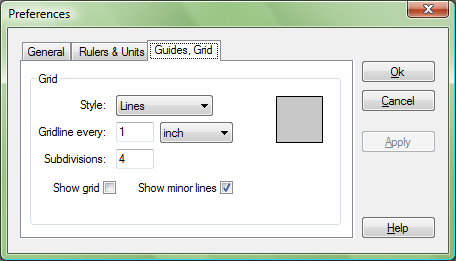

Guides and Grid tab have one option, Grid.

Grid part is used to set various options like Style, Grid line dimension, Grid line color, Subdivisions, Show grid, Show minor lines of grid.
Style, sets line style of Grid major and minor lines. It can be: Lines, Dashed lines and Dots.
Grid line every, sets how often grid line appears and what is the part between two lines in measuring unit you set.
Subdivisions, sets number of minor lines between two major lines.
Show grid, if checked shows grid if not hides grid.
Show minor lines, if checked grid will be divided in to minor lines, if not grid will show only major lines.
Color box is used to set color of the grid lines both Major and Minor.